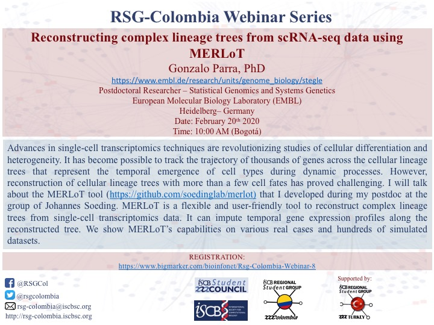
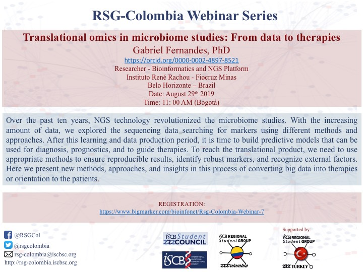
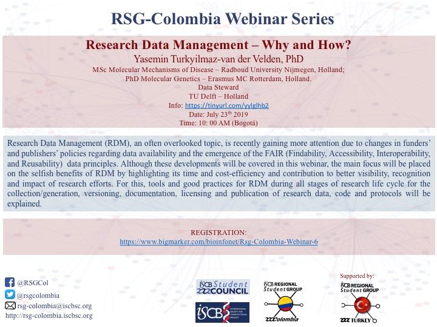
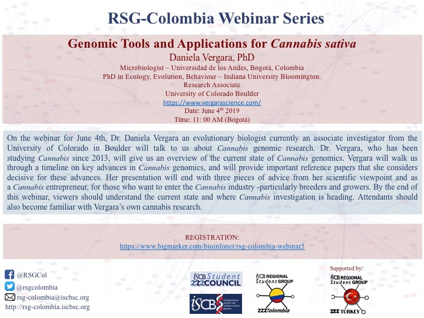
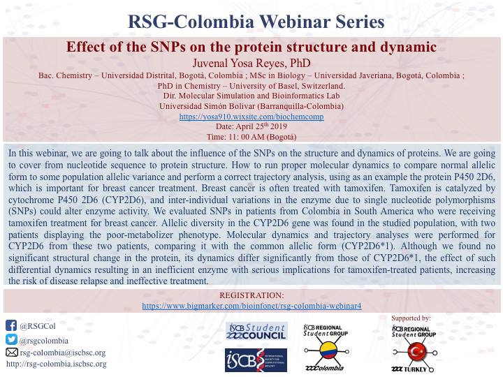
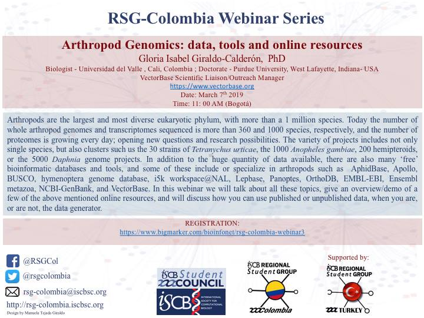
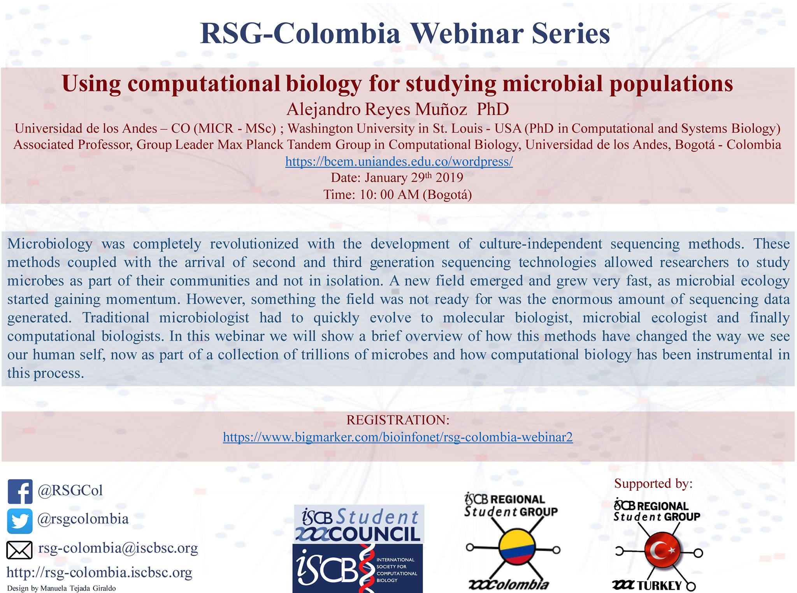
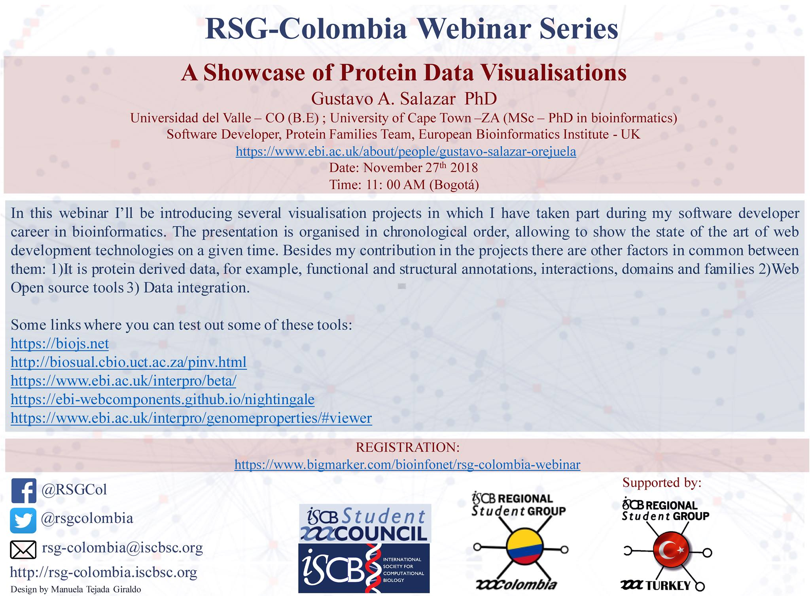

Webinars
El RSG-Colombia junto con su equipo ha fomentado la educación en el area de la bioinformatica y biologia computacional, para esto se ha enfocado en la atracción de exponentes a nivel nacional e internacional y se ha encargado de recrear, guardar, divulgar y presentar dichas presentaciones en diversos formatos en linea, para que futuros y antiguos estudiantes tenga esta información a la mano y puedan conocer los diversos proyectos e investigaciones que realizan estudiantes e investigadores alrededor del mundo.
Participaciones
SARS-CoV-2 Webinar series
Genómica de SARS-CoV-2 en Colombia: Aplicaciones y perspectivas - Katherine Laiton Donato. MSc. Unidad de Secuenciación y Genómica, Instituto Nacional de Salud, Bogotá-Colombia. https://www.researchgate.net/profile/Katherine_Laiton-Donato
Origen y evolución de SARS-CoV-2 - Jose A. Usme Ciro PhD, Profesor Asociado, Centro de Investigación en Salud para el Trópico (CIST), Universidad Cooperativa de Colombia, Santa Marta-Colombia https://www.researchgate.net/profile/Jose_Ciro
Artículos referencia: Genomic epidemiology of SARS-CoV-2 in Colombia https://tinyurl.com/yd6dljrt Molecular analysis of several in-house rRT-PCR protocols for SARS-CoV-2 detection in the context of genetic variability of the virus in Colombia https://tinyurl.com/ybxc2gad Substitutions in Spike and Nucleocapsid proteins of SARS-CoV-2 circulating in South America https://tinyurl.com/y765x239
Reconstructing complex lineage trees from scRNA-seq data using MERLoT
Gonzalo Parra, PhD https://www.embl.de/research/units/genome_biology/stegle Postdoctoral Researcher – Statistical Genomics and Systems Genetics European Molecular Biology Laboratory (EMBL) Heidelberg– Germany
Translational omics in microbiome studies: From data to therapies
Gabriel Fernandes https://orcid.org/0000-0002-4897-8521 Researcher - Bioinformatics and NGS Platform Instituto René Rachou - Fiocruz Minas Belo Horizonte - Brazi
Research Data Management - Why and How?
Yasemin Turkyilmaz-van der Velden Data Steward TU Delft - Holland. Info: https://tinyurl.com/yylglhb2 Supported by: ISCB RSG Turkey International Society for Computational Biology (ISCB) Student Council
Genomic Tools and Application for Cannabis sativa
Daniela Vergara Ph.D University of Colorado Boulder
Effect of the SNPs on the protein structure and dynamic
Juvenal Yosa Reyes Dir. Molecular Simulation and Bioinformatics Lab Universidad Simón Bolivar (Barranquilla-Colombia) https://yosa910.wixsite.com/biochemcomp
Arthropod Genomics: data, tools and online resources
Gloria Isabel Giraldo-Calderón, PhD Biologist (Universidad del Valle, Cali, Colombia); Doctorate (Purdue University, West Lafayette, Indiana); VectorBase Scientific Liaison/Outreach Manager, https://www.vectorbase.org, supported by ISCB RSG Turkey and International Society for Computational Biology (ISCB) Student Council
Using computational biology for studying microbial populations
Alejandro Reyes Muñoz (Associated Professor, Group Leader Max Planck Tandem Group in Computational Biology, Universidad de los Andes, Bogotá - Colombia) https://bcem.uniandes.edu.co/wordpress/ supported by ISCB RSG Turkey and International Society for Computational Biology (ISCB) Student Council
A Showcase of Protein Data Visualisation
Gustavo Salazar, software developer at Protein Families Team - European Bioinformatics Institute-UK. https://www.ebi.ac.uk/about/people/gustavo-salazar-orejuela supported by ISCB RSG Turkey and International Society for Computational Biology (ISCB) Student Council







